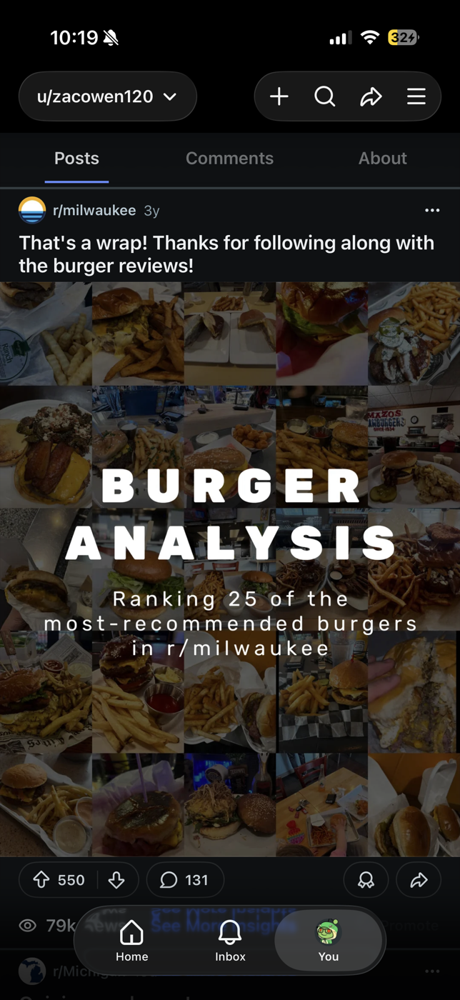
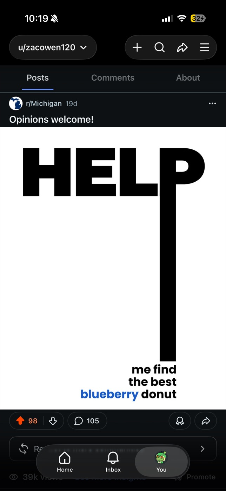
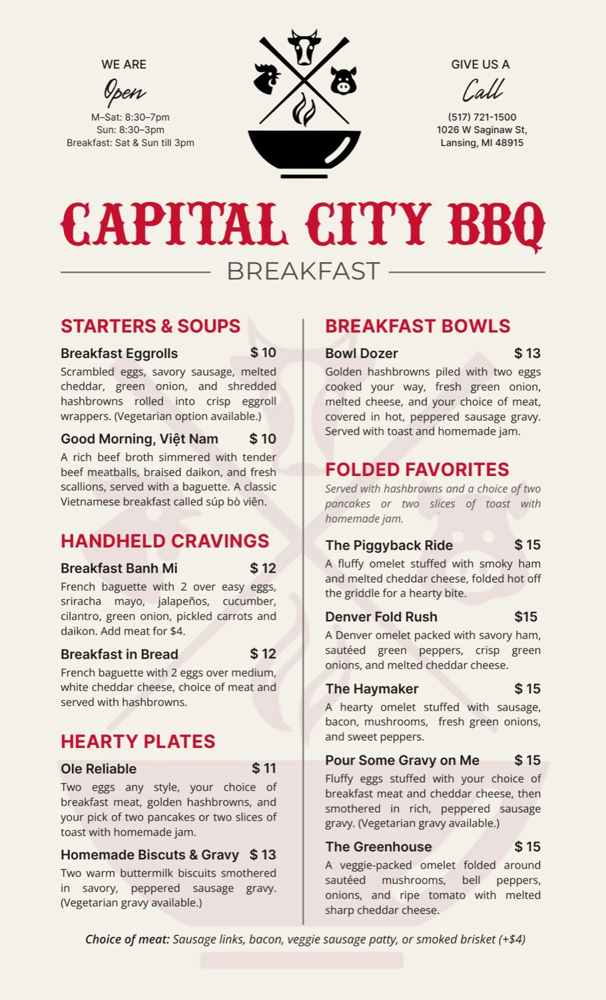
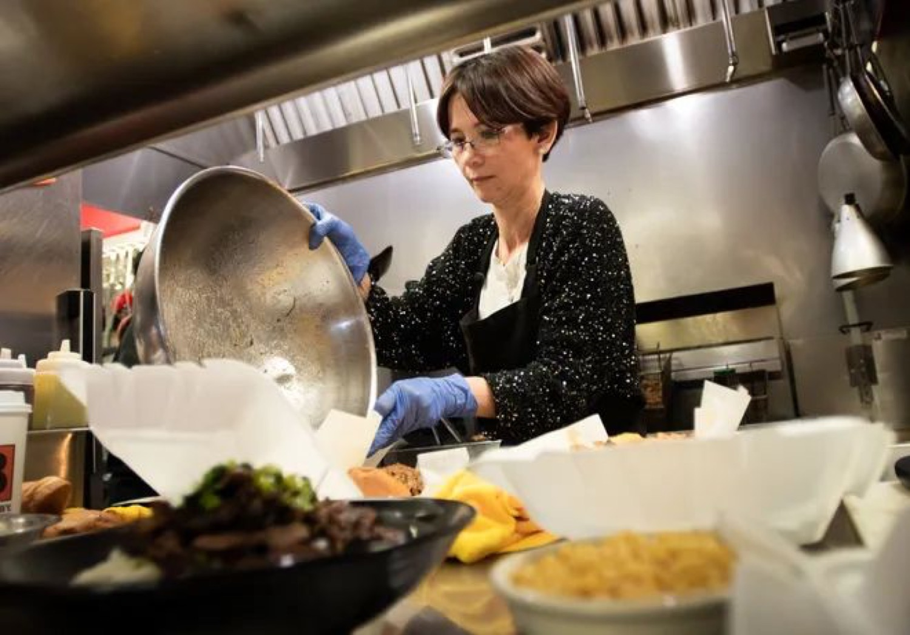
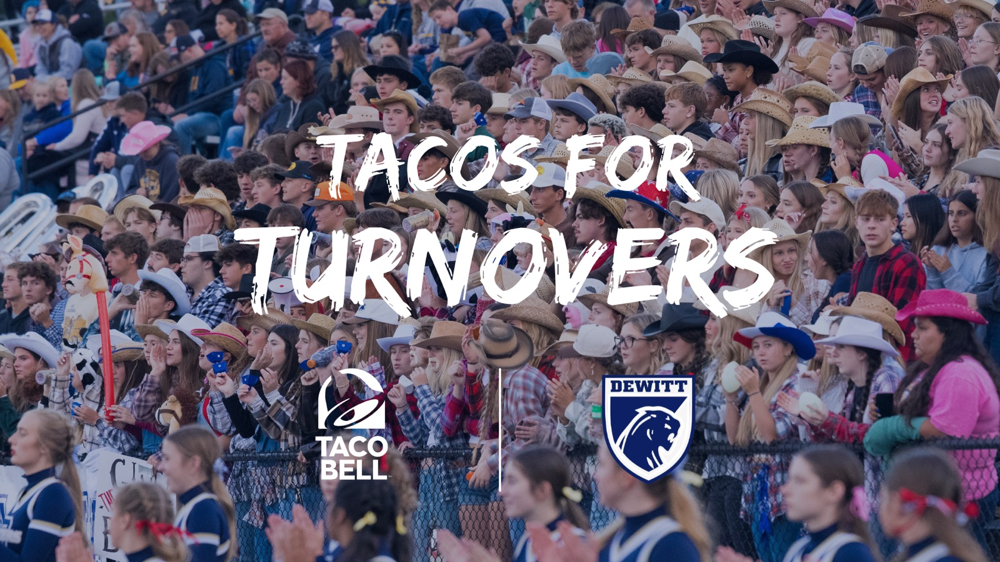

The same work, just unpaid. All love.
I accidentally fell into food reviews when I moved to Milwaukee. I posted a picture of a burger from a trending restaurant on Reddit, someone in the comments asked what I thought of it, and that led to me trying 25 burgers in the city of Milwaukee. It developed a following. Someone even recognized me at my gym (which was awkward for both of us lol). Then in Michigan I moved on to coney dog reviews. I meet business owners and chefs, eat their food, write about it, and bring traffic their way. So far: 1.5M views, 6,000+ shares, 2,000+ comments. All from eating. Read the other reviews here.
The two I designed myself:


And the reviews, tap any to read the original:
Linh Lee, owner of Capital City BBQ in Lansing, wanted to launch breakfast and needed someone to design the menu and name the dishes. I designed the whole menu, named every dish, and wrote every description. In return, I got free food for life and a lifelong friend. Best deal I've ever made. Pour some gravy on meeee.

read the full menu
Starting Fall 2026, our home crowd of roughly 3,000 fans gets a free taco for every turnover our defense forces, up to 3 per game (and yes, as a defensive coach, I'm fully aware of how selfish this is). I led the whole thing: designed the activation framework, mapped out the redemption logistics, and worked with Taco Bell corporate to secure the approval, funding, and resources. This fall is going to be awesome.
